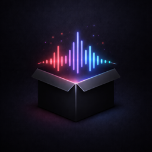
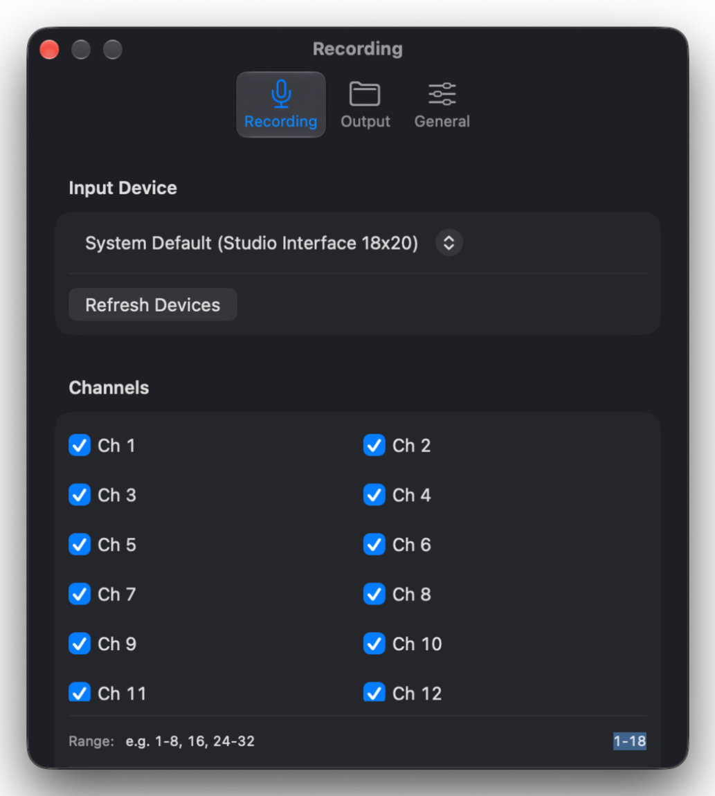
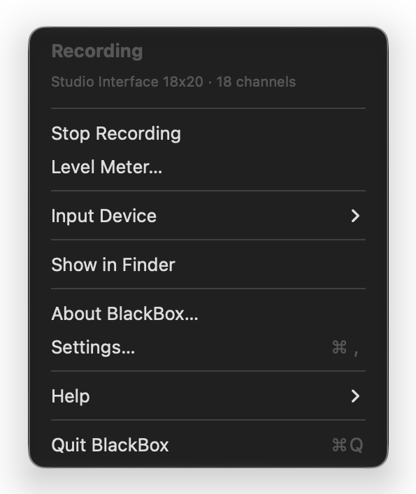

BlackBox Audio Recorder
You forgot to hit record. BlackBox didn’t.
BlackBox is an always-on audio recorder for macOS. It runs quietly in your menu bar, continuously capturing audio from any input device and saving uncompressed WAV files to your Mac.
Built for musicians, podcasters, sound designers, and anyone who never wants to miss a moment of audio.
$49.99 one-time, no subscription. Requires macOS 15.0 (Sequoia) or later.
Set it once. Forget it’s there.

Up to 255 tracks at once
Every input on its own track, not just a stereo mix. Pick them once and BlackBox records them every time.
Lives in your menu bar
No window to keep open. Start, stop and check your levels from the menu bar.Features
- Menu bar app – stays out of your way until you need it
- Continuous recording with automatic file rotation – a crash or power cut costs seconds of audio, not the whole session
- Configurable bit depth: 16-bit, 24-bit, or 32-bit WAV
- Records at your device’s native sample rate
- Multi-channel recording – tested to 64 channels, supports up to 255 simultaneously
- Split mode – one WAV file per channel for easy mixing
- Real-time level metering per channel
- Automatic silence gate – pauses recording during silence
- Disk space monitoring – stops safely before your drive fills up
- Lock-free audio engine – the audio thread never touches the disk, takes a lock, or allocates
- Fully offline – no accounts, no cloud, no telemetry